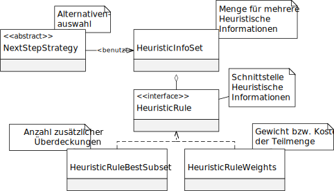

Package eu.andredick.aco.heuristic
Interface HeuristicRule<S extends AbstractSolution>
-
- All Known Implementing Classes:
HeuristicInfoSet,HeuristicRuleBestSubset,HeuristicRuleWeights
public interface HeuristicRule<S extends AbstractSolution>
Schnittstelle für Klassen der Heuristischen Information
Kapitel 3.3.7, S. 34, Heuristische Information
Ausprägungen der Komponente der Heuristische Informationen müssen diese Schnittstelle implemenntieren.
Die Komponente wird bei der Alternativenauswahl verwendet (sieheAbstractNextStepStrategy).

-
-
Method Summary
All Methods Instance Methods Abstract Methods Modifier and Type Method Description floatgetValue(S solution, java.util.List<java.lang.Integer> availableSubsets, java.lang.Integer subset)Liefert den Wert der Heuristischen Informationen
-
-
-
Method Detail
-
getValue
float getValue(S solution, java.util.List<java.lang.Integer> availableSubsets, java.lang.Integer subset)
Liefert den Wert der Heuristischen Informationen- Parameters:
solution- partialle Lösung im Konstruktionsprozess der AmeiseavailableSubsets- alle verfügbaren Alternativensubset- Alternative, für die die Heuristischen Informationen geliefert werden sollen- Returns:
- Wert der Heuristischen Informationen
-
-